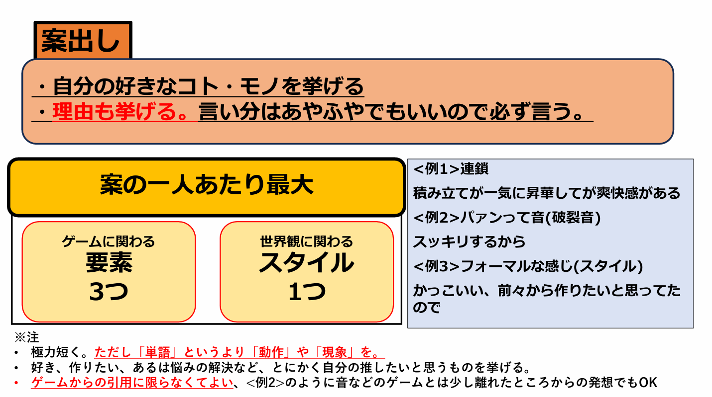

14名という大規模チームで挑んだゲーム制作において、開発初期の企画会議は司会者が制御しきれなくなった結果、方向性を失い完全な機能不全に陥っていました。「誰の意見を採用するか」「どの既存ゲームに似せるか」といった空中戦が続き、参加者の疲労と諦めが蔓延していたのです。
この状況を打破するため、私は実質的なディレクターとしてチームの指揮を執り、企画の白紙撤回を宣言。
急遽の企画立て直しの必要に迫られた結果、「属人性を排除し、人間の心理を利用して強制的に合意形成へ導く」独自の企画フォーマットを検討、実施しました。
本記事では、その具体的なステップと背後にあるファシリテーションの意図を解説します。
導入の前提：「既存ゲーム」という言葉の禁止
再始動の会議にあたり、私は「既存のゲーム名を出すこと」を一切禁止しました。
「〇〇みたいなゲーム」という提案は、シンプルで分かりやすい反面、参加者それぞれが自分の都合の良いバイアスで脳内補完してしまうため、認識のズレを生む最大の原因となります。また、既存ゲームの面白さの本質を誤解したまま模倣してしまう危険性もあります。そのため、完全に「ゼロベース（要素の抽出）」からゲームを設計するボトムアップ型のアプローチを採用しました。
合意形成の4ステップ
ステップ1：最小要素とスタイルの抽出（案出し）
各メンバーに対し、ゲームの動きに関わる「要素（最大3つ）」と、見た目に関わる「スタイル（1つ）」を出してもらいました。ここでの絶対条件は、「極力短く、それ以上分解できない最小要素にすること」と「それが好きな理由を必ずセットにすること」です。
【提出例】
- 要素： 連鎖
理由： 積み立ててきたものが一気に昇華する感じに爽快感があるから - 要素： パァンという破裂音
理由： 聴覚的にスッキリするから - スタイル： フォーマルな服装
理由： かっこいいので、前々から3Dで作ってみたかったから
要素を求める際に見せていたスライドです。
考える時間を10分設け、その間に議事録に直接書き込んでもらいました。

メンバーから出た案について、全員に順番に説明を求めました。
これは単なる発表ではなく、私がファシリテーターとして「本当に最小要素になっているか」を監視・整理するためのプロセスです。複雑な要素が混ざっていた場合は、その真意を探り、全員が共通認識を持てるレベルまで要素を分解し、言葉の体裁を整えました。
ステップ2：共感による投票と、多数決の強制力
整理された「要素・スタイル」に対し、各メンバーに「要素に3票、スタイルに1票」を必ず投票してもらいました。
この投票ルールには、人間の心理を誘導できるよう以下の意図を込めました。
- 当事者意識の醸成：
要素が「日常やゲームのここが好き」という最小単位まで分解されているため、共感のハードルが低くなっています。必ず3票入れさせることで、どれだけ気を遣う人でも1票は純粋な「自分の趣味（やりたいこと）」に投じることができ、プロジェクトへの参加意識を高めます。 - 意思の分散防止と圧倒的多数の可視化：
14名もいると意見が割れがちですが、1人3票を持たせることで、人気の案には票が集中します。「これだけ多くの人がやりたいと言っているなら」という納得感が生まれ、少数の反対意見も自然と収束していきます。
また、14名でのゲーム制作においてはメインシステムだけでなく「サブ要素」も必要になるため、第2位、第3位の案にも妥当な票数が集まることを狙いとしました。 - 迷いの排除：
「どれでもいい」という事態を防ぐため、提出者の「理由」に対する共感がそのまま「投票理由」となるような仕組みにしました。
ステップ3：システム要件への逆算（内容の決定）
投票の結果、上位の「要素2つ」と「スタイル1つ」を採用案として決定しました。
ここからは、選ばれた要素を成立させるための要件定義（チェックリストの穴埋め）に入ります。以下の項目について、採用された要素から逆算する形で、最も適性の高いものをこれまた多数決で決定していきました。
- ゲームジャンル（アクション、パズル、シューティング等）
- 遊ぶ人数
- 目的（高いスコア、敵を倒す、謎を解く等）
- 一番面白いポイント（一気に崩す爽快感、ギリギリの緊迫感等）
- ルール（失敗時のペナルティや救済要素）
- プレイを面白くするギミックやシステム
- 周辺要素（やり込み要素など）
ジャンルなどの大枠（1〜4）は必須とし、細かなシステム（5〜7）は開発期間やリソースの規模感を考慮しながら、その場で取捨選択を行いました。
ステップ4：並行稼働による即時タスク化（終了と解散）
ゲームの基本システムが決定した直後、発表（2日後）までの時間的制約をクリアするため、参加者を即座に3つの部屋（通話ルーム）に分割し、並行して作業をスタートさせました。
- デザイナー部屋：
決定したスタイル、ゲームシステム、メインコンセプトに基づき、世界観や風景のイメージラフを作成。あわせて、後回しになりがちな「タイトルロゴ」の制作に着手させました。 -
プログラマ部屋：
最多人数を占めるため、機動力低下を防ぐ目的で隔離。この時間をGitHubの環境構築やリポジトリ準備に充てさせました。
隔離することで、メンバー同士で気兼ねなく仕様に対する意見（や愚痴）を吐き出すガス抜きの場としても機能させ、環境構築終了後にチーフから報告を受けられる狙いもあります。
チーフは終了後企画部屋へと戻り、これから管理する仕事となるゲーム仕様について意見を提出する役割を担います。 - 企画・UI部屋（残りメンバー、3D:サウンド:プランナーなど）：
ゲームの画面遷移図や必要最低限のUI設計を行い、デザイナー部屋と連携して発表用資料（企画書）の明文化を進めました。
この分割は、発表資料を作るための「建前」でありながら、そのまま実際のゲーム制作の仕様書にもなり得るため、スムーズに実制作へと移行できます。
また、UI設計やタイトルロゴ、アートボードといった作業は、サークル等のアマチュア開発において「大体の正解はあるが、確信の持てる正解がない（大体どうなっても良い）」と認識されがちで、仕事が遅れる原因になりやすい傾向があります。
そのため、これらをゲーム企画ができた直後、つまり「鉄が熱いうち（モチベーションが最も高い瞬間）」にやり切らせてしまうという目的がありました。単なる「建前」だけでなく、開発を失速させないための「実利」をも兼ね備えた采配でした。
振り返り：真のグループワークとは何か
「グループディスカッション」からの脱却
一連のプロセスを事後に見直してみて、チーム開発における「企画会議」について一つの重要な気づきがありました。
初期の企画会議で行われていたのは、「各々が完成された案を持ち寄り、優秀なものを一つ選び、そこから分岐が出たらまた選んで膨らませる（意見の生き残り方式）」というものでした。
これは一見話し合いに見えますが、実態は単なるグループディスカッション、あるいは大人数でのディベートに過ぎません。
この方式では、自分の案が落選したメンバーに敗北感や当事者意識の欠如を生むリスクがあるほか、非常に場当たり的に進行が行われるため、決着がつかないという状況の行き詰まり、また(実際に発生したことですが)指揮を執っている人間が方向を見失い膨らませることに失敗し、収拾がつかなくなる恐れもあります。
対して、今回導入した「立案プロセス」は、各人が出した意見から純粋な要素だけを抽出し、それらを集結させてグループ全体の総意を創り出すという手法です。誰かを勝たせたり負けさせたりするのではなく、集団心理を活用して全員の意思を1つのゲームに織り込む。
皆で決めたコンセプトを軸に、アイデアを出し合い取捨選択をしていくこと。
これこそが文字通りの「グループワーク」ではないのかと思いました。
まとめ
この一連のプロセスにより、意見が膠着していた14名の大規模チームは、最終的に5時間ほどで「全員が納得した明確なゴール」を共有し、実務へと動き出すことができました。
「会議アジェンダを緻密に作り込み、多数決というスモールステップを意図的に踏ませる」というこの構造化されたファシリテーションは、今後のチーム開発において、停滞を打破する極めて有効な手段になり得るという実感を得ました。